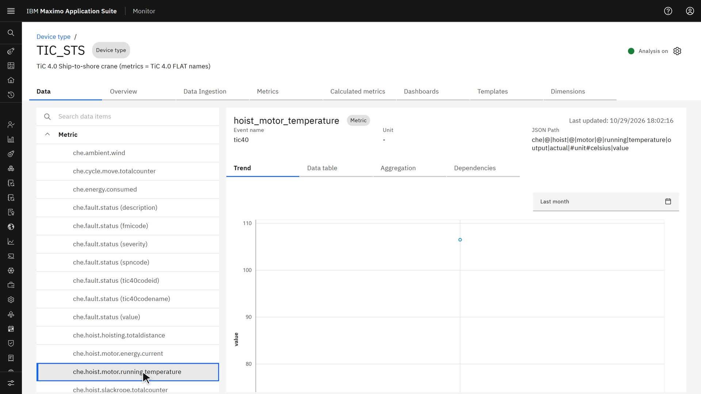
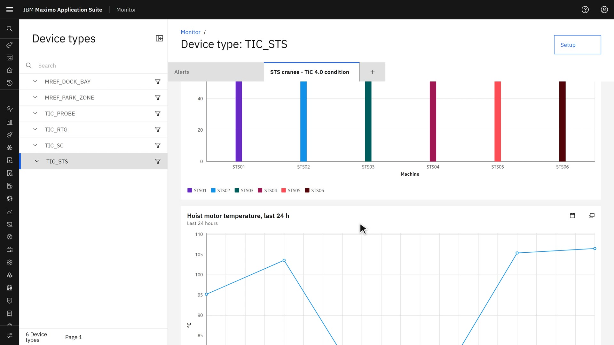
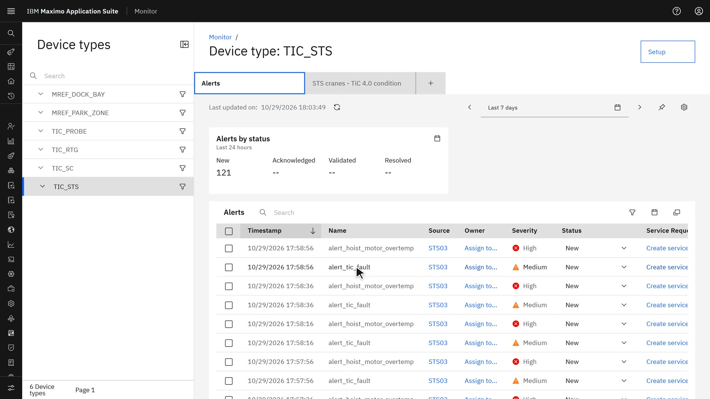
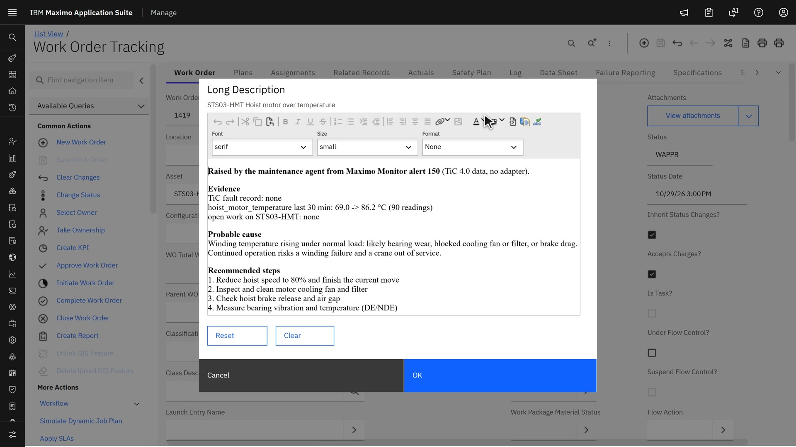

ABB and Siemens equipment, straight into Maximo Monitor, in TiC 4.0
A container terminal where the cranes run on ABB and Siemens drives and PLCs. Each machine publishes its readings in the TiC 4.0 standard, and Maximo Monitor stores every value under its TiC name. Monitor needs configuration only, no adapter. Everything below is generated live in this page, the same way the demo terminal does it.
Drives and PLCs on the cranes
Motor current, temperature, energy and run hours come from the drive. Moves, twistlocks and load come from the PLC.
ABB ACS880 · AC500Siemens SINAMICS S120 · S7-1500Read once, name by TiC 4.0
An edge gateway reads the drive and PLC over OPC UA and writes each value under its TiC 4.0 data point name. The vendor's own register number stays at the edge.
OPC UAPROFINETJ1939One standard message
The TiC 4.0 FLAT form, one key per data point, published over MQTT. ABB and Siemens cranes send the same names.
PAS 4000MQTTMetrics by TiC name
One device type per equipment class. Each metric's JSON path is the TiC FLAT name. Alert rules, dashboards and anomaly models then work on it.
TIC_STSTIC_RTGTIC_SCWork on the right part
An alert becomes a service request and a work order on the hoist motor, not on the crane in general. The same data also keeps the meters and PMs current.
SR → WOMeters · PMsThe terminal: ABB-equipped and Siemens-equipped cranes
20 machines: 6 ship-to-shore cranes, 8 RTGs and 6 straddle carriers. Select one to follow its data from the drive to Monitor.
Make something happen
Each switch changes what the selected machine's drive and PLC report. The page shows the TiC message change, Monitor's alert fire and the work order Manage raises.
Hoist motor temperature · alert limit 90 °C
Alerts
| Time | Alert | Source | Severity |
|---|
This panel is simulated in your browser. The real Monitor and Manage screens from the live system are below.
The same flow on a real Maximo system
Captured from a running MAS 9 environment fed by the same simulator, so the names and limits match the page above.




What to take away
Vendor neutral
ABB and Siemens cranes publish the same TiC 4.0 names, so a crane from either vendor shows up in Monitor the same way. Adding another OEM changes the edge mapping, not Maximo.
Configuration, not code
Monitor maps each metric to its TiC FLAT key. There is no custom adapter, connector or translation service to build and keep running.
From reading to work order
Alerts, meters and PMs run on the same standard data, so a hot hoist motor turns into work on the right part with the evidence attached.